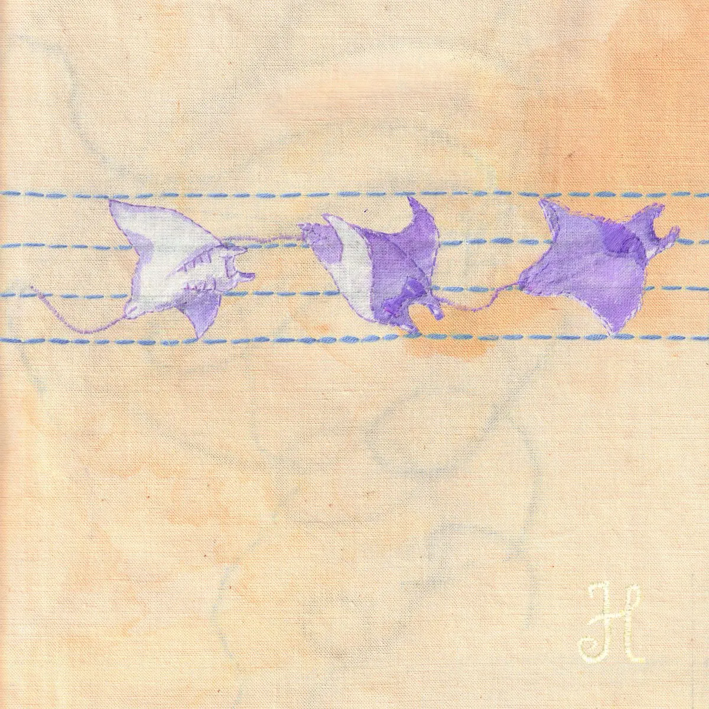

Publié le 6 novembre 2026

H JeuneCrack sortira son nouvel album 3ème Mouvement le 13 novembre 2026, selon la boutique officielle de l'artiste. Ce disque conclut une trilogie entamée au début de l'année 2025 sur son label Opale Système.
Le rappeur et producteur toulousain d'origine lilloise a teasé cette sortie à travers une vidéo animée et le single Freestyle 3ème Mouvement. Ce titre a ouvert la voie fin octobre sur l'ensemble des plateformes de streaming.
| Projet | Date de sortie | Format |
|---|---|---|
| 1er Mouvement | 7 février 2025 | 8 titres |
| 2ème Mouvement | 6 mars 2026 | 8 titres |
| 3ème Mouvement | 13 novembre 2026 | Album studio |
Quand sortira le troisième album de H JeuneCrack ?
L'album 3ème Mouvement sera disponible le 13 novembre 2026 sur toutes les plateformes de streaming et en format physique. Ce projet marque la fin de la série Mouvement, initiée vingt-et-un mois plus tôt par l'artiste indépendant.
L'annonce officielle est intervenue après la mise en ligne du morceau Freestyle 3ème Mouvement le 21 octobre 2026. Ce titre montre une écriture incisive posée sur deux productions évolutives, signées par l'artiste lui-même. Une courte animation symbolique a ensuite scellé le rendez-vous avec son public.
Le disque succède aux volets 1er Mouvement et 2ème Mouvement, parus en février 2025 et mars 2026. La page Apple Music de H JeuneCrack confirme cette chronologie. Chaque chapitre a permis au beatmaker de préciser sa palette sonore et ses thématiques éclectiques.
Pourquoi ce troisième volet est-il attendu ?
H JeuneCrack s'est fait connaître grâce à une méthode de création totalement autonome dans la scène underground. Il écrit, compose et réalise la quasi-totalité de ses morceaux au sein de sa propre structure. Son style associe des rythmiques électroniques nerveuses à des textes précis et teintés d'humour froid.
La régularité de ses sorties impressionne par son exigence technique. Les deux premiers projets comptaient huit titres chacun et laissaient entrevoir un univers en constante mutation. Ce dernier opus vient boucler l'arc narratif et musical développé depuis deux saisons.
L'environnement technique du disque repose sur une équipe fidèle. L'ingénieur du son Johnny Ola assure le mixage de plusieurs titres du projet. Jack Palmer prend en charge le mastering. Cette continuité technique apporte une cohérence sonore notable à l'ensemble du triptyque.
Quelle place occupe H JeuneCrack dans la scène indé ?
L'artiste toulousain incarne une figure singulière du rap indépendant francophone. Sans les circuits majeurs traditionnels, il a bâti sa communauté en direct. Ses disques se vendent sur sa propre boutique en ligne et en concert.
Son approche artisanale du beatmaking inspire de nombreux créateurs de sa génération. En contrôlant l'ensemble de la chaîne de production, il préserve une totale liberté de format et de propos. Ses collaborations régulières avec des artistes comme Jungle Jack ou Mairo témoignent d'un ancrage fort dans la culture alternative.
Pour accompagner la fin de cette trilogie, le rappeur prépare la tournée Mouvement Final Tour à travers la France. Ce parcours de dix dates en salle culminera le 3 mars 2027 au Bataclan à Paris. Sur scène, il défendra l'intégralité du projet en s'appuyant sur son dispositif de performance Opale.